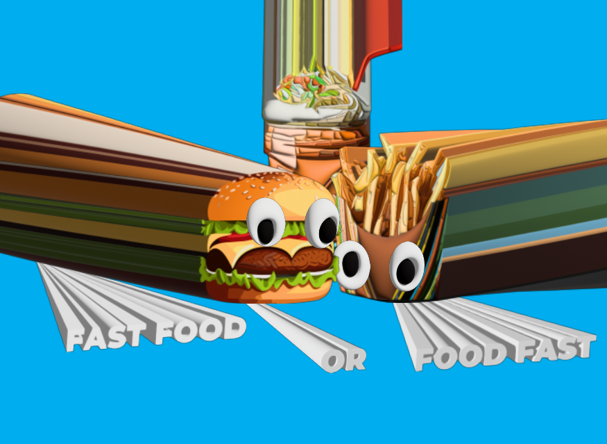

Mijn Werken
Photoshop
Photoshop
Illustrator

Hallo, mijn naam is Abdul Uguz. Ik ben een Student met een passie voor graphic design.
Op deze pagina deel ik graag meer over mijn achtergrond, ervaringen en interesses. Ik ben altijd geïnteresseerd in photoshop en vind het leuk om te basketballen.
Als je meer wilt weten, neem dan gerust contact met me op!
Als ik terugkijk op Werkplekleren 1, kan ik mijn ervaringen op verschillende vlakken evalueren.
Organisatorisch vlak:
Tijdens Werkplekleren 1 heb ik inzicht gekregen in de organisatiestructuur en -processen binnen een bedrijf.
Ik heb geleerd hoe verschillende afdelingen samenwerken, het belang van effectieve communicatie en planning,
en hoe besluitvorming plaatsvindt.
Het managen van deadlines en prioriteiten is ook een aspect dat ik goed
heb kunnen ontwikkelen.
Persoonlijk vlak:
Op persoonlijk vlak heb ik ervaren hoe cruciaal tijdmanagement is. Het balanceren tussen werk en privé,
en het omgaan met stressvolle situaties waren uitdagingen die mijn persoonlijke groei hebben bevorderd.
Flexibiliteit en het ontvangen van feedback zijn competenties die ik verder heb ontwikkeld.
Technisch vlak:
Wat betreft technische vaardigheden heb ik mijn kennis vergroot.
Nieuwe tools en software die relevant zijn
voor mijn vakgebied zijn onderdeel geworden van mijn vaardigheden.
Mijn technisch inzicht is verdiept, en de
praktische ervaring heeft niet alleen mijn bekwaamheid,
maar ook mijn zelfvertrouwen versterkt.
Persoonlijke groei:
Ik zie mezelf gegroeid op verschillende gebieden.
Mijn probleemoplossend vermogen en mijn vermogen om
effectieve oplossingen te bedenken zijn verbeterd.
Zelfreflectievaardigheden zijn toegenomen, waardoor ik me
bewuster ben geworden van mijn sterke en zwakke punten.
Deze groei heeft me beter voorbereid op uitdagingen
en mijn proactieve benadering van taken versterkt.
Professionele kwaliteiten:
Mijn communicatieve vaardigheden, zowel mondeling als schriftelijk, waren van essentieel belang tijdens
Werkplekleren 1.
Het vermogen om in teamverband te werken en effectief te communiceren met collega's en
leidinggevenden speelde een centrale rol.
Daarnaast waren technische expertise en het vermogen om problemen
op te lossen cruciaal voor het succesvol uitvoeren van taken.
Uitbreiden van kwaliteiten voor Werkplekleren 2:
Voor Werkplekleren 2 wil ik mijn timemanagement verder ontwikkelen en mijn projectmanagementvaardigheden
aanscherpen.
Ook blijf ik streven naar uitbreiding van mijn technische kennis, gezien de voortdurende
evolutie van technologie.
Een dieper begrip van de bedrijfsstrategie en mijn rol daarin staat eveneens op
mijn agenda.
Gemiste aspecten en wensen voor Werkplekleren 2:
In Werkplekleren 1 miste ik soms een diepgaand inzicht in bepaalde bedrijfsprocessen en strategische
besluitvorming.
Graag zou ik meer betrokken worden bij strategische discussies en besluitvorming om mijn
begrip van de organisatie te verdiepen.
Ook wens ik meer te leren over specifieke aspecten van het vakgebied
graphic design i.p.v. web design die in Werkplekleren 1 niet voldoende aan bod kwamen.
Feedback over mijn
prestaties tot nu toe zou zeer waardevol zijn om gericht te werken aan verbeterpunten.